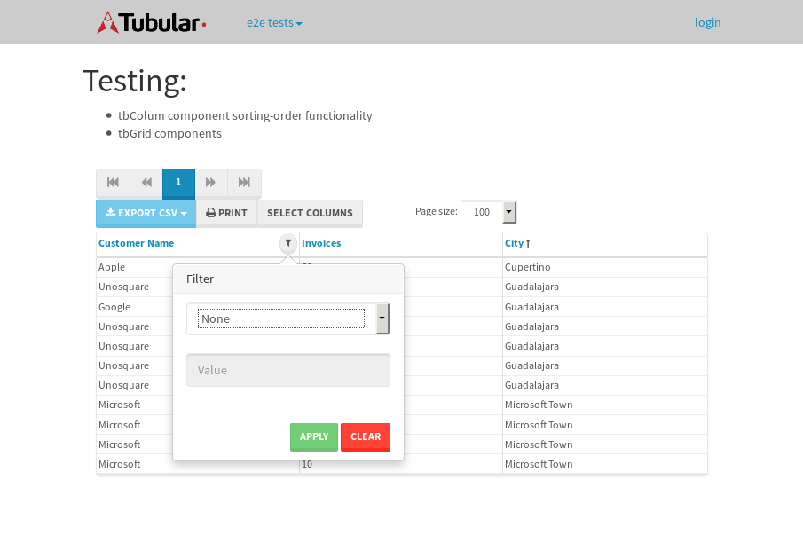

tbColumn.Grid Sorting - 35.129sTests: 5Skipped: 0Failures: 0 should sort data in ascending order then on descending order when sorting by Order Id column - 6.803sTests passed: 100.00%should order data in ascending order when click-sorting an unsorted text column - 7.859sTests passed: 100.00%should order data in descending order when click-sorting an ascending-sorted text column - 6.005sTests passed: 100.00%should order data in ascending order when click-sorting an unsorted date column - 8.208sTests passed: 100.00%should order data in descending order when click-sorting twice an unsorted date column - 6.252sTests passed: 100.00%
tbColumn.Grid Components - 3.89sTests: 3Skipped: 0Failures: 0 should print grid - 1.162s***Skipped***Tests passed: 0%should export grid - 1.308s***Skipped***Tests passed: 0%should show column selector - 1.42sTests passed: 100.00%
tbSingleForm.Form validations - 2.264sTests: 2Skipped: 0Failures: 0 should have an empty required field - 1.536sTests passed: 100.00%should not be able to click on save - 0.728sTests passed: 100.00%
Tubular Filters.tbColumnFilter - 116.236sTests: 12Skipped: 0Failures: 0 should cancel filtering when clicking outside filter-popover - 9.79sTests passed: 100.00%should disable Value text-input for "None" filter - 6.502sTests passed: 100.00%should disable apply button for "None" filter - 6.581sTests passed: 100.00%should decorate popover button when showing data is being filtered for its column - 12.549sTests passed: 100.00%should correctly filter data for the "Equals" filtering option - 8.796sTests passed: 100.00%should correctly filter data for the "Not Equals" filtering option - 9.991sTests passed: 100.00%should correctly filter data for the "Contains" filtering option - 10.876sTests passed: 100.00%should correctly filter data for the "Not Contains" filtering option - 9.072sTests passed: 100.00%should correctly filter data for the "Starts With" filtering option - 7.766sTests passed: 100.00%should correctly filter data for the "Not Starts With" filtering option - 8.409sTests passed: 100.00%should correctly filter data for the "Ends With" filtering option - 7.631sTests passed: 100.00%should correctly filter data for the "Not Ends With" filtering option - 6.922sTests passed: 100.00%
Tubular Filters.tbColumnDateTimeFilter - 141.445sTests: 12Skipped: 0Failures: 0 should cancel filtering when clicking outside filter-popover - 7.612sTests passed: 100.00%should disable Value text-input for "None" filter - 6.496sTests passed: 100.00%should disable apply button for "None" filter - 6.727sTests passed: 100.00%should clear filtering when clicking on Clean button - 18.665sTests passed: 100.00%should decorate popover button when showing data is being filtered for its column - 12.583sTests passed: 100.00%should correctly filter data for the "Equals" filtering option - 8.096sTests passed: 100.00%should correctly filter data for the "Not Equals" filtering option - 7.778sTests passed: 100.00%should correctly filter data for the "Between" filtering option - 13.698sTests passed: 100.00%should correctly filter data for the "Greater-or-equal" filtering option - 11.907sTests passed: 100.00%should corretlly filter data for the "Greater" filtering option - 12.019sTests passed: 100.00%should correctly filter data for the "Less-or-equal" filtering option - 12.198sTests passed: 100.00%should correctly filter data for the "Less" filtering option - 12.523sTests passed: 100.00%
Tubular Filters.tbColumnOptionsFilter - 83.416sTests: 3Skipped: 0Failures: 0 should cancel filtering when clicking outside filter-popover - 9.029sTests passed: 100.00%should decorate popover button when showing data is being filtered for its column - 12.198sTests passed: 100.00%should filter column-elements in accordance to the selected filter when selecting a single option - 50.879sTests passed: 100.00%
Tubular Filters.tbTextSearch - 49.321sTests: 5Skipped: 0Failures: 1 min-chars is not set - 0.959sTests passed: 100.00%should filter data in searchable-column customer name to matching inputted text, starting from 3 characters - 7.375sTests passed: 100.00%should filter data in searchable-column shipper city to matching inputted text, starting from 3 characters - 12.441sTests passed: 100.00%should show clear button when there is inputted text only - 6.546sTests passed: 100.00%should clear filtering when clicking clear button - 16.63sExpected 10 not to be 10.✗Tests passed: 0.00%
tbForm related components.tbCheckboxField - 9.6sTests: 2Skipped: 0Failures: 0 should save changes on "SAVE" - 5.039sTests passed: 100.00%should discard changes on "CANCEL" - 2.654sTests passed: 100.00%
tbForm related components.tbDropDownEditor - 17.28sTests: 5Skipped: 0Failures: 0 should set initial input value to the value of "value" attribute when defined - 3.128sTests passed: 100.00%should show the component name value in a label field when "showLabel" attribute is true - 2.391sTests passed: 100.00%should show a help field equal to this attribute, is present - 2.624sTests passed: 100.00%should submit modifications to item/server when clicking form "Save" - 5.016sTests passed: 100.00%should NOT submit modifications to item/server when clicking form "Cancel" - 3.042sTests passed: 100.00%
tbForm related components.tbTextArea - 21.469sTests: 7Skipped: 0Failures: 0 should set initial input value to the value of "value" attribute when defined - 1.964sTests passed: 100.00%should be invalidated when the number of chars is not in the range of "min" and "max" attributes - 2.351sTests passed: 100.00%should show the component name value in a label field when "showLabel" attribute is true - 2.146sTests passed: 100.00%should show a help field equal to this attribute, is present - 2.25sTests passed: 100.00%should require the field when the attribute "required" is true - 3.142sTests passed: 100.00%should submit modifications to item/server when clicking form "Save" - 3.987sTests passed: 100.00%should NOT submit modifications to item/server when clicking form "Cancel" - 3.732sTests passed: 100.00%
tbForm related components.tbDateEditor - 22.195sTests: 6Skipped: 0Failures: 4 should set initial date value to the value of "value" attribute when defined - 3.309sExpected false to be true.✗Tests passed: 0.00%should be invalidated when the date is not in the range of "min" and "max" attributes - 5.27sExpected false to be true.✗Expected 1 to be less than 1.✗Tests passed: 33.33%should show the component name value in a label field when "showLabel" attribute is true - 2.53sTests passed: 100.00%should show a help field equal to this attribute, is present - 3.066sTests passed: 100.00%should submit modifications to item/server when clicking form "Save" - 2.948sExpected false to be true.✗Tests passed: 0.00%should NOT submit modifications to item/server when clicking form "Cancel" - 2.827sExpected false to be true.✗Tests passed: 0.00%
tbForm related components.tbTypeaheadEditor - 24.189sTests: 7Skipped: 0Failures: 1 should show an options list when there is an API-info/component entered-data - 2.776sTests passed: 100.00%should select the option clicked - 2.954sTests passed: 100.00%should show a "delete" button when an option/match is selected, and delete the option if button is clicked - 3.184sFailed: each key must be a number of string; got boolean✗Tests passed: 50.00%should show a label value equal to the component name when "showLabel" attribue is true - 2.605sTests passed: 100.00%should require a value when "require" attribute is true - 2.416sTests passed: 100.00%should submit modifications to item/server when clicking form "Save" - 5.513sTests passed: 100.00%should NOT submit modifications to item/server when clicking form "Cancel" - 2.989sTests passed: 100.00%
tbForm related components.tbSimpleEditor - 23.79sTests: 9Skipped: 0Failures: 1 should set initial input value to the value of "value" attribute when defined - 2.594sTests passed: 100.00%should be invalidated when the number of chars is not in the range of "min" and "max" attributes - 2.484sTests passed: 100.00%should show the component name value in a label field when "showLabel" attribute is true - 2.227sTests passed: 100.00%should set input placeholder to the value of "placeholder" attribute - 1.785sTests passed: 100.00%should validate the control using the "regex" attribute, if present - 2.668sFailed: each key must be a number of string; got function✗Tests passed: 0.00%should show a help field equal to this attribute, is present - 2.235sTests passed: 100.00%should require the field when the attribute "required" is true - 2.167sTests passed: 100.00%should submit modifications to item/server when clicking form "Save" - 3.784sTests passed: 100.00%should NOT submit modifications to item/server when clicking form "Cancel" - 2.708sTests passed: 100.00%
tbForm related components.tbNumericEditor - 23.432sTests: 7Skipped: 0Failures: 0 should set initial component value to the value of "value" attribute when defined - 2.063sTests passed: 100.00%should be invalidated when the entered number is not in the range of "min" and "max" attributes - 3.529sTests passed: 100.00%should show the component name value in a label field when "showLabel" attribute is true - 3.205sTests passed: 100.00%should show a help field equal to this attribute, is present - 3.561sTests passed: 100.00%should require the field when the attribute "required" is true - 2.635sTests passed: 100.00%should submit modifications to item/server when clicking form "Save" - 4.534sTests passed: 100.00%should NOT submit modifications to item/server when clicking form "Cancel" - 2.874sTests passed: 100.00%
tbForm Connection Error - 3.329sTests: 1Skipped: 0Failures: 0 tbForm connection error functionality - 0.679sTests passed: 100.00%
tbForm Connection Error - 3.294sTests: 1Skipped: 0Failures: 0 tbForm connection error functionality - 0.639sTests passed: 100.00%
tbForm Connection Error - 2.778sTests: 1Skipped: 0Failures: 1 tbForm connection error functionality - 0.54sExpected '' to equal 'No data found'.✗Tests passed: 0.00%
tb Form Date Editor.tbDateEditor - 24.011sTests: 6Skipped: 0Failures: 0 should set initial date value to the value of "value" attribute when defined - 2.485sTests passed: 100.00%should be invalidated when the date is not in the range of "min" and "max" attributes - 3.755sTests passed: 100.00%should show the component name value in a label field when "showLabel" attribute is true - 3.371sTests passed: 100.00%should show a help field equal to this attribute, is present - 3.537sTests passed: 100.00%should submit modifications to item/server when clicking form "Save" - 3.777sTests passed: 100.00%should NOT submit modifications to item/server when clicking form "Cancel" - 4.133sTests passed: 100.00%
tbGridComponents - 10.371sTests: 6Skipped: 0Failures: 0 should add item with newRow method - 2.282sTests passed: 100.00%should add item with newRow method and cancel action - 0.864sTests passed: 100.00%should update item with tbSaveButton - 1.593sTests passed: 100.00%should update item with tbSaveButton and cancel action - 1.447sTests passed: 100.00%should remove item with tbRemoveButton - 1.613sTests passed: 100.00%should remove item with tbRemoveButton and cancel action - 0.979sTests passed: 100.00%
tbGridPager.navigation buttons - 9.391sTests: 1Skipped: 0Failures: 0 should perform no action when clicking on the numbered navigation button corresponding to the current-showing results page - 1.466sTests passed: 100.00%
tbGridPager.navigation buttons.first/non-last results page related functionallity - 3.79sTests: 2Skipped: 0Failures: 0 should disable "first" and "previous" navigation buttons when in first results page - 1.697sTests passed: 100.00%should enable "last" and "next" navigation buttons when in a results page other than last - 2.093sTests passed: 100.00%
tbGridPager.navigation buttons.last/non-first results page related functionallity - 4.134sTests: 2Skipped: 0Failures: 0 should disable "last" and "next" navigation buttons when in last results page - 2.017sTests passed: 100.00%should enable "first" and "previous" navigation buttons when in a results page other than first - 2.117sTests passed: 100.00%
tbGridPager.page navigation - 9.045sTests: 5Skipped: 0Failures: 0 should go to next results page when clicking on next navigation button - 2.019sTests passed: 100.00%should go to previous results page when clicking on previous navigation button - 2.074sTests passed: 100.00%should go to last results page when clicking on last navigation button - 1.843sTests passed: 100.00%should go to first results page when clicking on first navigation button - 1.749sTests passed: 100.00%should go to corresponding results page when clicking on a numbered navigation button - 1.36sTests passed: 100.00%
tbGridPagerInfo - 5.726sTests: 2Skipped: 0Failures: 0 should show text in accordance to numbered of filter rows and current results-page - 2.19sTests passed: 100.00%should show count in footer - 0.427sTests passed: 100.00%
tbHttp - 25.562sTests: 8Skipped: 0Failures: 0 should be authenticated - 3.196sTests passed: 100.00%retrieve data - 2.817sTests passed: 100.00%should not login bad credentials - 2.829sTests passed: 100.00%should have a refresh token - 2.991sTests passed: 100.00%should remove authentication - 5.109sTests passed: 100.00%get method-Is not authenticated - 2.575sTests passed: 100.00%post method-Is not authenticated - 2.862sTests passed: 100.00%should regenerate access token on post - 3.183sTests passed: 100.00%
LocalData.Grid Local Data Sorting - 10.084sTests: 4Skipped: 0Failures: 1 should order data in ascending order when click-sorting an unsorted text column - 2.227sTests passed: 100.00%should order data in descending order when click-sorting an ascending-sorted text column - 3.064sTests passed: 100.00%should correctly filter data for the "Contains" filtering option - 2.446sFailed: Element is not currently interactable and may not be manipulated✗Tests passed: 0.00%should correctly filter data for the "Contains" with ENTER key - 2.345sTests passed: 100.00%
OData.Grid OData Sorting - 44.173sTests: 7Skipped: 0Failures: 1 should order data in ascending order when click-sorting an unsorted numeric column - 8.454sTests passed: 100.00%should order data in descending order when click-sorting an ascending-sorted numeric column - 4.33sTests passed: 100.00%should order data in ascending order when click-sorting an unsorted text column - 3.487sTests passed: 100.00%should order data in descending order when click-sorting an ascending-sorted text column - 9.288sTests passed: 100.00%should order data in ascending order when click-sorting an unsorted date column - 5.851sTests passed: 100.00%should order data in descending order when click-sorting an ascending-sorted date column - 8.178sTests passed: 100.00%should correctly filter data for the "Contains" filtering option - 4.582sFailed: Element is not enabled✗Tests passed: 0.00%
tbPageSizeSelctor - 19.018sTests: 4Skipped: 0Failures: 0 should filter up to 10 data rows per page when selecting a page size of "10" - 4.466sTests passed: 100.00%should filter up to 20 data rows per page when selecting a page size of "20" - 2.757sTests passed: 100.00%should filter up to 50 data rows per page when selecting a page size of "50" - 5.362sTests passed: 100.00%should filter up to 100 data rows per page when selecting a page size of "100" - 4.764sTests passed: 100.00%
tbRowSelectable - 16.332sTests: 2Skipped: 0Failures: 0 selected rows - 8.362sTests passed: 100.00%unselected rows - 5.256sTests passed: 100.00%
tbSingleForm.Form fields - 18.934sTests: 7Skipped: 0Failures: 1 should load correct info - 1.443sTests passed: 100.00%should change customer name - 1.175sTests passed: 100.00%should save it - 5.822sFailed: Element is not enabled✗Tests passed: 0.00%should clear the inputs - 1.091sTests passed: 100.00%should update - 1.536sTests passed: 100.00%should reset editor - 4.811sTests passed: 100.00%should not save if not Changes - 3.055sTests passed: 100.00%
tbSingleForm.Form validations - 2.435sTests: 2Skipped: 0Failures: 0 should load correct info - 1.153sTests passed: 100.00%should not be able to click on save - 1.282sTests passed: 100.00%
tubularTemplateServiceModule.#createColumns() - 1.581sTests: 2Skipped: 0Failures: 0 should return an array with 7 elements - 0.791sTests passed: 100.00%first element should match - 0.79sTests passed: 100.00%
tubularTemplateServiceModule.#generateFieldsArray() - 2.139sTests: 2Skipped: 0Failures: 0 should return an array with 7 elements - 0.886sTests passed: 100.00%first element should match - 1.253sTests passed: 100.00%
tubularTemplateServiceModule.#generatePopup() - 0.914sTests: 1Skipped: 0Failures: 0 should html match - 0.914sTests passed: 100.00%
tubularTemplateServiceModule.#getEditorTypeByDateType() - 3.957sTests: 4Skipped: 0Failures: 0 should be tbDateTimeEditor - 1.155sTests passed: 100.00%should be tbNumericEditor - 0.857sTests passed: 100.00%should be tbCheckboxField - 0.813sTests passed: 100.00%should be tbSimpleEditor - 1.131sTests passed: 100.00%
tubularTemplateServiceModule.#generateForm() - 3.501sTests: 3Skipped: 0Failures: 0 should single layout html match - 1.36sTests passed: 100.00%should two columns layout html match - 0.861sTests passed: 100.00%should three columns layout html match - 1.28sTests passed: 100.00%
tubularTemplateServiceModule.#generateCells() - 0.97sTests: 1Skipped: 0Failures: 0 should html match - 0.97sTests passed: 100.00%
tubularTemplateServiceModule.#generateGrid() - 0.922sTests: 1Skipped: 0Failures: 0 should html match - 0.922sTests passed: 100.00%


{kind=link}